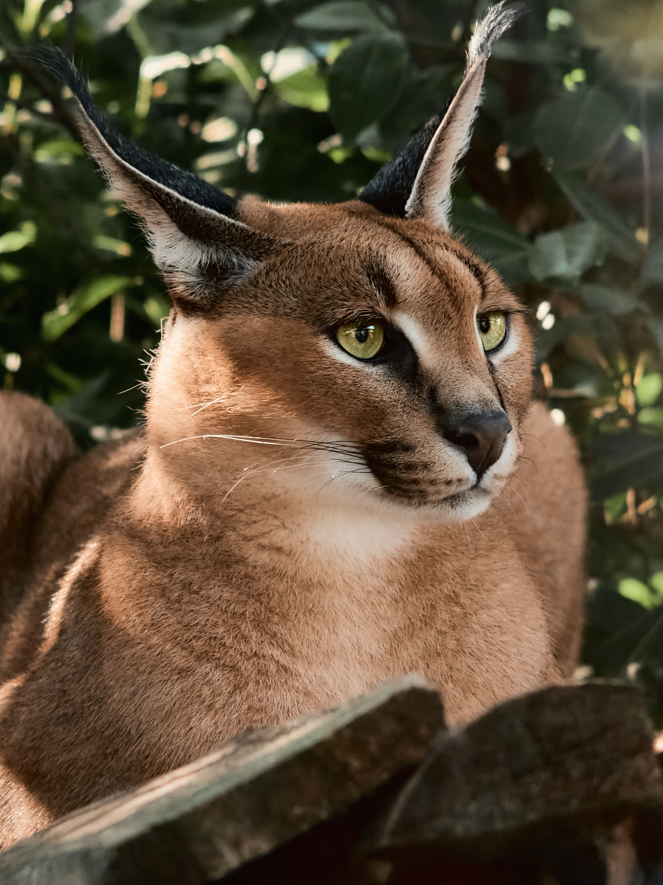

Floppa
Floppa facts
This is a picture of a caracal cat, more commonly known as "floppa". Although this cute specimen seems like a welcome addition to the home, it is unfortunately banned from private ownership in Australia.

Photo by Mario Esposito on Unsplash